原文地址：Hexo中Buttefly主题美化进阶（八） | 偷掉月亮 (moonshuo.cn)
大家好，我是阿硕，专注与后端，略懂前端的一个菜鸟程序猿，今天将为大家讲述Butterfly主题的我们页面的整体美化
设置透明度
打开我们外部引入的css文件，复制以下的代码
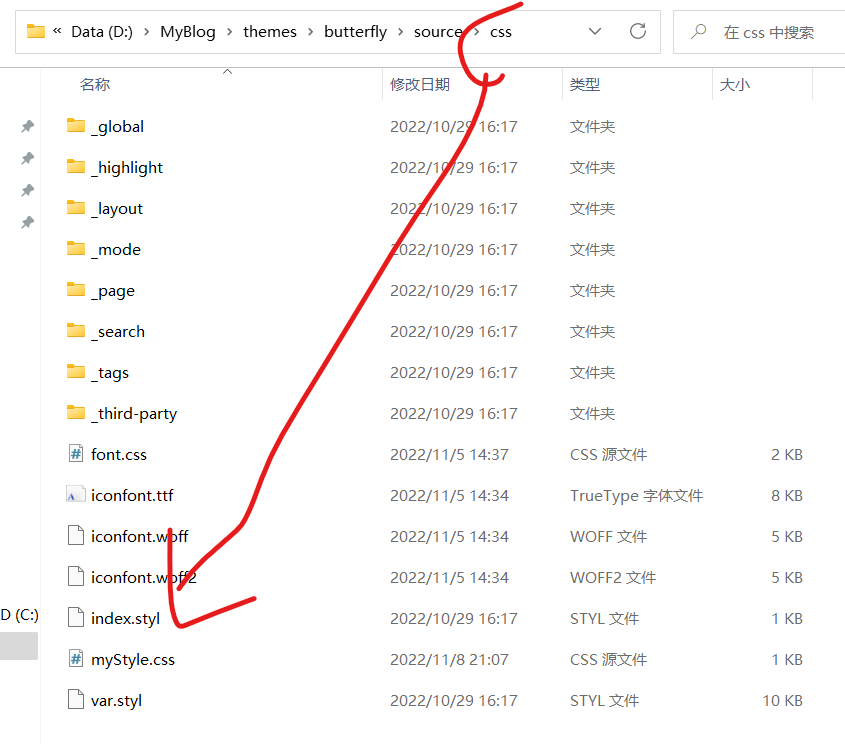
1 2 3 4 5 6 7 8 9 10 11 12 13 14 15 16 17 18 19 20 21 22 23 24 25 26 27 28 29 30 31 32 33 34 35 36 37 38 39 40 41 42 43 44 45 46 47 48 49 50 51 52 53
#web_bg { background-image : linear-gradient (to top, #fff1eb 0% , #ace0f9 100% ); #background : #FFEFBA ; #background : -webkit-linear-gradient (to right, #FFFFFF , #FFEFBA ); #background : linear-gradient (to right, #FFFFFF , #FFEFBA ); background : #2BC0E4 ; background : -webkit-linear-gradient (to right, #EAECC6 , #2BC0E4 ); background : linear-gradient (to right, #EAECC6 , #2BC0E4 ); } #aside_content .card-widget ,#recent-posts >.recent-post-item ,.layout_page >div :first -child:not (.recent-posts ),.layout_post >#page ,.layout_post >#post ,.read-mode .layout_post >#post { background : rgba (255 , 255 , 255 , .5 ); } #aside-content >.card-widget { background : rgba (255 , 255 , 255 , .6 ); } #aside-content >.sticky_layout >.card-widget { background : rgba (255 , 255 , 255 , .6 ); } .layout >#post { background : rgba (255 , 255 , 255 , .6 ); } .layout >#page { background : rgba (255 , 255 , 255 , .6 ); } .layout >#archive { background : rgba (255 , 255 , 255 , .6 ); }
动态渐变
上面设置了静态渐变色，而这里我们设置动态渐变色，大家二选一
1 2 3 4 5 6 7 8 9 10 11 12 13 14 15 16
@keyframes gradientBG { 0% { background-position : 0% 50% ; } 50% { background-position : 100% 50% ; } 100% { background-position : 0% 50% ; } } #web_bg { background : linear-gradient (-45deg , #ee7752 , #e73c7e , #23a6d5 , #23d5ab ); background-size : 400% 400% ; animation : gradientBG 15s ease infinite; }
图片渐变
大家一定要选择一张合适的图片，要不还是很难看的，这里其实就是设置了背景图片，图片放在与css同级的img文件下
1 2 3 4 5
#web_bg { background-image : url ("../img/bg.jpg" ), linear-gradient (60deg , rgba (255 , 165 , 150 , 0.5 ) 5% , rgba (0 , 228 , 255 , 0.35 )), }
说明
这里参考了的大佬（Fomalhaut）的配置
如果大家同时设置了首页的banner图片与背景图片，建议大家使用同一张图片，否则会显得很突兀，当然大家也可以自行配置，下面给出博主自己的配置
1 2 3 4 5 6 7 8 9 10 11 12 13 14 15 16 17 18 19 20 21 22 23 24 25 26 27 28 29 30 31 32 33 34 35 36 37 38 39 40 41 42 43 44 45 46 47 48 49 50 51 52 53 54 55 56 57 58 59 60 61 62 63 64 65 66 67 68 69 70 71 72 73 74 75 76 77 78 79 80 81 82 83 84 85 86 87 88 89 90 91
#web_bg { background-image : url ("../img/banner.jpg" ), linear-gradient (60deg , rgba (255 , 165 , 150 , 0.5 ) 5% , rgba (0 , 228 , 255 , 0.35 )) } #aside-content >.card-widget { background : linear-gradient (-45deg , #e8d8b9 , #eccec5 , #a3e9eb , #bdbdf0 , #eec1ea ); box-shadow : 0 0 5px rgb (66 , 68 , 68 ); position : relative; background-size : 400% 400% ; -webkit-animation : Gradient 10s ease infinite; -moz-animation : Gradient 10s ease infinite; animation : Gradient 10s ease infinite !important ; } @-webkit-keyframes Gradient { 0% { background-position : 0% 50% ; } 50% { background-position : 100% 50% ; } 100% { background-position : 0% 50% ; } } @-moz-keyframes Gradient { 0% { background-position : 0% 50% ; } 50% { background-position : 100% 50% ; } 100% { background-position : 0% 50% ; } } @keyframes Gradient { 0% { background-position : 0% 50% ; } 50% { background-position : 100% 50% ; } 100% { background-position : 0% 50% ; } } #aside-content >.card-widget .card-info >#card-info-btn { background-color : #3eb8be ; border-radius : 8px ; } #aside-content >.sticky_layout >.card-widget { background : rgba (255 , 255 , 255 , .8 ); } .layout >#post { background : rgba (255 , 255 , 255 , .8 ); } .layout >#page { background : rgba (255 , 255 , 255 , .6 ); } .layout >#archive { background : rgba (255 , 255 , 255 , .6 ); }
关于渐变色的配置，博主的审美不敢恭维。给出大家网站[uiGradients - Beautiful colored
gradients](https://uigradients.com/#DigitalWater)，大家选择自己需要的css代码进行配置即可
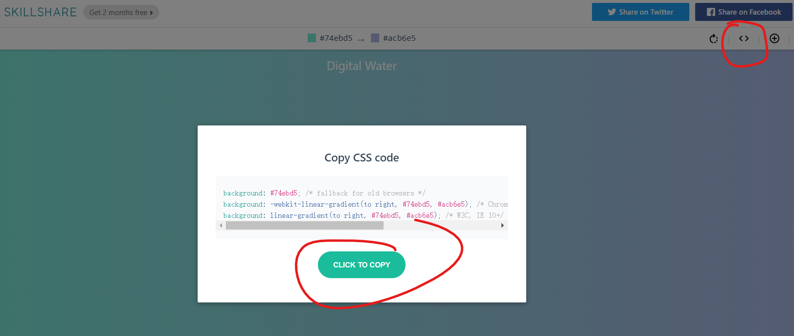
在这个配置过程中，如果以上的小伙伴按照上面的配置没有生效，那么打开butterfly的主题文件，搜索background，这样也是可以使得背景生效的
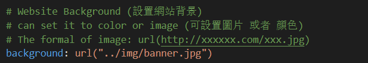
**注意注意注意，如果这里出现黑色，白色主题下不协调的情况，请参考下面这一篇文章的关于透明度bug的修复，这可能是新版本的问题**
Hexo中Buttefly主题美化进阶续篇（十一） | 偷掉月亮 (moonshuo.cn)
深浅模式下不同背景
首先在butterfly的主题配置文件下添加以下内容
1 2 3 4 5 6
# Website Background (設置網站背景) # can set it to color or image (可設置圖片 或者 顔色) # The formal of image: url (http://xxxxxx.com/xxx.jpg ) background: url ("../img/banner.jpg" ) #黑暗主题下文件的位置 background_dark: url ("../img/bannerBlack.jpg" )
打开以下的路径的文件，…themes\butterfly\source\css\var.styl
我们在第36行左右将代码更换下面的代码
1 2 3
$web-bg = hexo-config('background ') && unquote(hexo-config('background ')) $web-bg-dark = hexo-config('background_dark') && unquote(hexo-config('background_dark')) $index_top_img_height = hexo-config('index_top_img_height') ? convert(hexo-config('index_top_img_height')) : 100vh
最终一步，打开..themes\butterfly\source\css_mode\darkmode.styl这个文件，然后我们在41行左右，更改为以下的内容，这里是去除了一行，增加了两行哦
1 2 3 4 5 6 7 8 9
#web_bg background : $web-bg-dark #footer:before, #page-header:before position: absolute width: 100% height: 100% background-color: alpha ($dark-black, .7 ) content: ''
页脚的设置
背景设置
设置完上面的之后，我们发现页脚显得非常突兀！！！我们进行的设置并没有影响到页脚的变化
去掉丑丑的蓝色背景
….themes\butterfly\source\css_layout\footer.styl
打开上述路径的文件，把blue那一行删除
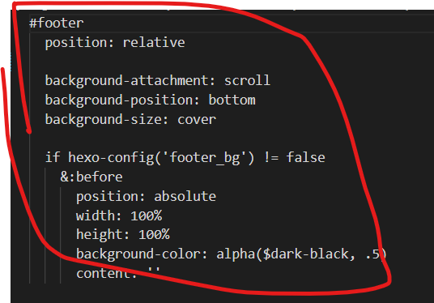
更改底层文字
在js文件下新建foot.js文件，复制以下代码
1 2 3 4 5 6 7 8 9 10 11 12 13 14 15 16 17 18 19 20 21 22 23 24 25 26 27 28
$(document ).ready (function (e ){ $('.copyright' ).html ('©2022 <i class="fa-fw fas fa-heartbeat card-announcement-animation cc_pointer"></i> By MAIFY美菲' ); }) $(document ).ready (function (e ){ show_date_time (); }) function show_date_time ($('.framework-info' ).html ('小破站已经安全运行<span id="span_dt_dt" style="color: #fff;"></span>' ); window .setTimeout ("show_date_time()" , 1000 );BirthDay =new Date ("3/5/2022 0:0:0" );today=new Date (); timeold=(today.getTime ()-BirthDay .getTime ()); sectimeold=timeold/1000 secondsold=Math .floor (sectimeold); msPerDay=24 *60 *60 *1000 e_daysold=timeold/msPerDay daysold=Math .floor (e_daysold); e_hrsold=(e_daysold-daysold)*24 ; hrsold=Math .floor (e_hrsold); e_minsold=(e_hrsold-hrsold)*60 ; minsold=Math .floor ((e_hrsold-hrsold)*60 ); seconds=Math .floor ((e_minsold-minsold)*60 ); span_dt_dt.innerHTML ='<font style=color:#afb4db>' +daysold+'</font> 天 <font style=color:#f391a9>' +hrsold+'</font> 时 <font style=color:#fdb933>' +minsold+'</font> 分 <font style=color:#a3cf62>' +seconds+'</font> 秒' ; }
同时因为这个代码是jquery文件进行解析的，所以我们需要下载jquery.js文件，打开下面的网站，另存为js文件，同样也放在js文件下(这里我将下载的文件更改名字了，大家可以不更改名字，但是引入的时候和名字要相同)
https://code.jquery.com/jquery-3.6.1.min.js
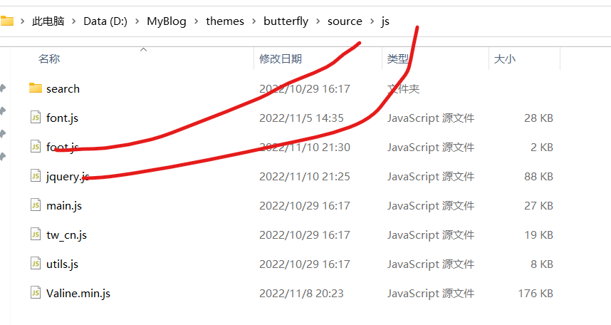
注意jquey文件引入在前
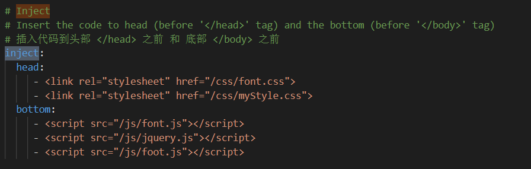
阿里巴巴彩色图标
前面的文章中我们介绍了如何引用图标，现在教大家如何使用彩色的图标，Hexo中Buttefly主题配置美化（六） | 偷掉月亮 (moonshuo.cn)
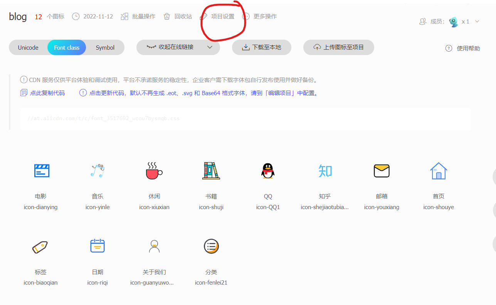
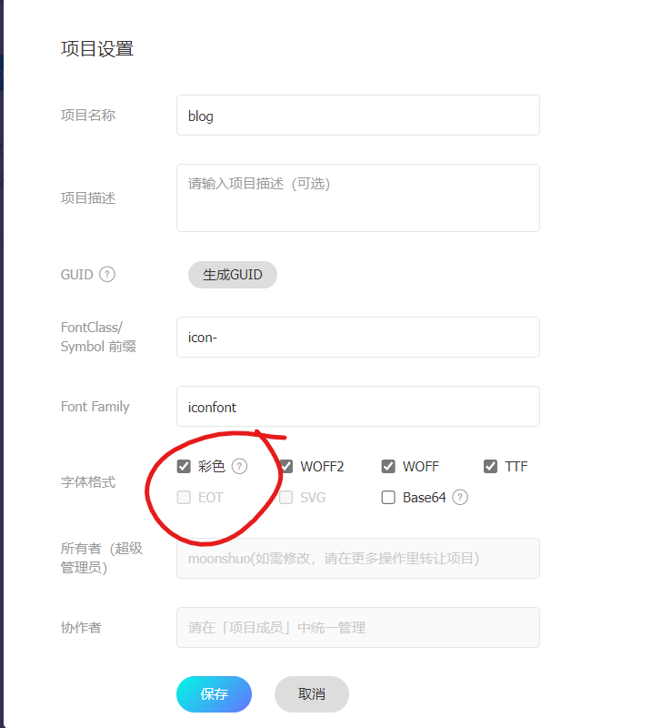
剩下的操作与原来的相似，我们直接下载代码，替换原来的即可，不会的同学可以看上面的文章
成功，导航栏有点难看，就不截图了
更换字体
下载
首先我们在网络上面搜索一款字体（要开源免费的，要不小心律师函），这里给上一些网址
庞门正道标题体字体免费下载和在线预览-字体天下
(fonts.net.cn)
Google
Fonts | 谷歌字体中文版 | GoogleFonts
首先将文件放到下面，大家可以看到我已经有一个font.css,但是这个图标的，图标可能会经常换，所以这里我新建立一个css文件
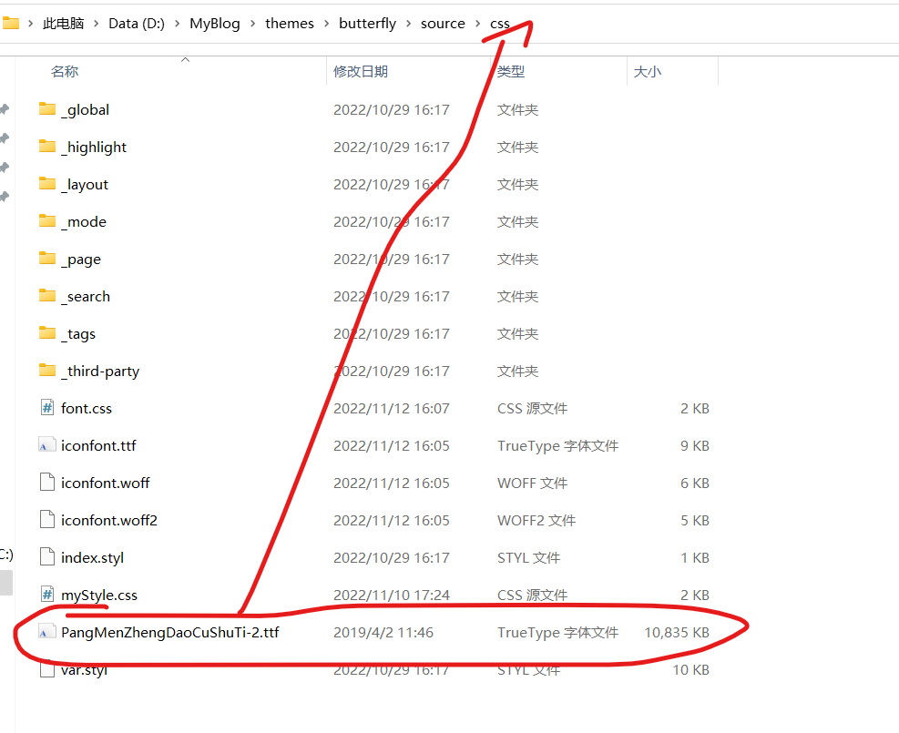
在新建立的css文件中复制以下代码,在这里文件结构虽然看来有点乱，但是怕大家没有编程经验，所以怎么简单怎么设置
1 2 3 4 5 6
@font-face { font-family : 'PMZDCST' ; font-display : swap; src : url ('./PangMenZhengDaoCuShuTi-2.ttf' ) format ("truetype" ); }
在配置文件中引入
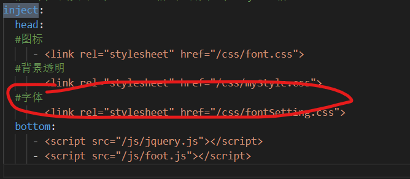
配置字体
在主题配置文件搜索font，我们可以看到原作者已经将对应的字体位置写的很清楚了，我们只需要写入即可，我们也可以引入多个字体，下面挑选一些主要进行说明
1 2 3 4 5 6 7 8 9
font :# 全局字体大小 global-font-size: #代码字体大小 code-font-size: #全局字体，与我们css文件中的字体名称要一致 font-family: 'PMZDCST' #代码字体 code-font-family: 'PMZDCST'
刷新之后，我们查看会成功，为了网站的可读性，大家尽量选择耐看的字体，而不是花里胡哨的字体
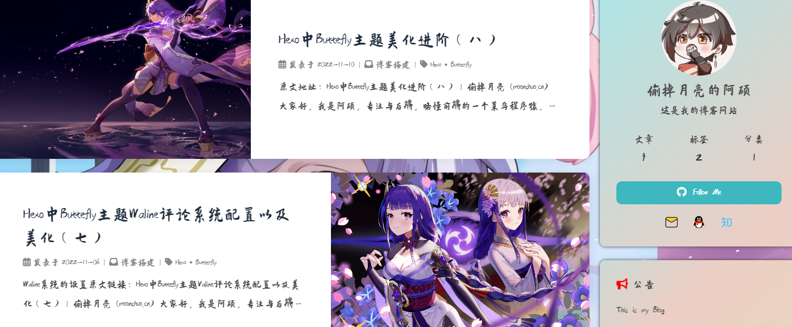
鼠标样式更改
博主参考了很多文章，但是大部分都是叫我们直接引入超链接，我们不能自定义自己的图片，现在我们准备自定义自己的图片作为自己的鼠标
准备工作
首先找好我们的图片，但是注意不能太大，像素大小最好为50*50或者以下（大家可以自行更改图片像素大小），太大的话有时不会显示这个效果，而且那样的话我们网页的图标会显得巨大
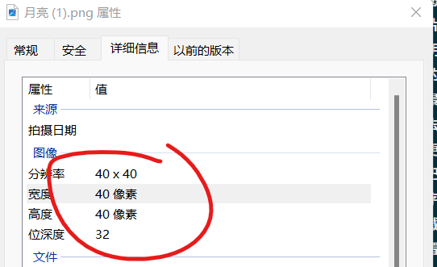
现在我们打开下面的网站Convertio
— 文件转换器 ，将我们的图片上传，转换为CRU模式，转换完毕我们将文件下载，我在source文件下建立了一个mouse文件，专门存储cru文件，将文件存储到下面
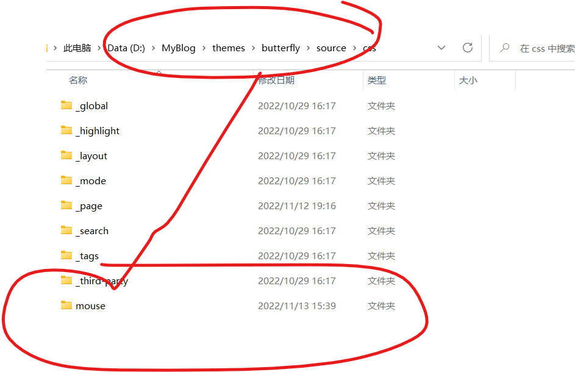
代码引入
复制以下代码到css文件中，在使用外挂标签进行引入，我们也可以直接写入到已经存在的css文件中，替换为我们自己的代码名称即可，然后会发现这个鼠标已经生效 ，
1 2 3 4 5 6 7 8 9 10 11 12 13 14 15 16 17 18 19 20 21 22 23 24 25 26 27 28 29 30 31 32 33 34 35 36 37 38 39 40 41 42 43 44 45 46 47
body ,html { cursor : url ('./mouse/月亮.cur' ), auto !important ; } img { cursor : url ('./mouse/move.cur' ), auto !important ; } a :hover { cursor : url ('./mouse/help.cur' ), auto; } input :hover { cursor : url ('指定样式cur文件路径' ), auto; } button :hover { cursor : url ('指定样式cur文件路径' ), auto; } i :hover { cursor : url ('指定样式cur文件路径' ), auto; } #footer-wrap a :hover { cursor : url ('指定样式cur文件路径' ), auto; } #pagination .page-number :hover { cursor : url ('指定样式cur文件路径' ), auto; } #nav .site-page :hover { cursor : url ('指定样式cur文件路径' ), auto; }
小建议
如果大家不知道用什么鼠标样式，可以打开下面的网站，里面有一些免费的，但是可能比较大，大家可以使用上面的工具先转换为图片，调整像素，然后在转换为回来
鼠标指针
- 光标 - 电脑鼠标指针下载 - 致美化 - 漫锋网 (zhutix.com)
鼠标点击效果
上面学会了鼠标的样式更改，那么现在我们可以尝试更改鼠标的点击效果，在butterfly配置文件中，找到下面的，更改自己的代码就OK，注意mobile是在手机端的是否显示
1 2 3 4 5 6 7 8 9 10 11 12 13 14 15 16 17 18 19 20 21
# Mouse click effects: fireworks (鼠標點擊效果: 煙火特效) fireworks: enable: false zIndex: 9999 # -1 or 9999 mobile: false # Mouse click effects: Heart symbol (鼠標點擊效果: 愛心) click_heart: enable: false mobile: false # Mouse click effects: words (鼠標點擊效果: 文字) ClickShowText: enable: true text: - I - LOVE - YOU fontSize: 15px random: false mobile: false
导航栏修改
参考：关于Butterfly的导航栏的一些教程
| Ariasakaの小窝 (yisous.xyz)
分离搜索与菜单栏
打开以下路径的文件
..\themes\butterfly\layout\includes\header\nav.pug，直接使用下面的代码替代源代码
1 2 3 4 5 6 7 8 9 10 11 12 13 14 15 16
nav #nav span #blog_name a #site-name (href=url_for('/')) #[=config.title] #menus !=partial('includes/header /menu_item', {}, {cache: true}) #nav-right if (theme.algolia_search .enable || theme.local_search .enable ) #search-button a .site-page .social-icon .search i .fas .fa-search .fa-fw span =' '+_p('search.title ') #toggle-menu a .site-page i .fas .fa-bars .fa-fw
导航栏居中
现在我们想要将导航栏居中显示，我们只需要在我们的自定义css文件中添加以下代码即可
1 2 3 4 5 6 7
#nav-right { flex :1 1 auto; justify-content : flex-end; margin-left : auto; display : flex; flex-wrap :nowrap; }
导航栏常驻
在我们看文章的时候，顶栏会消失，但是这里想要一直显示，在定义css中添加下面的文件
1 2 3 4 5 6 7 8 9 10 11 12 13 14
.nav-fixed #nav { transform : translateY (58px )!important ; -webkit-transform : translateY (58px )!important ; -moz-transform : translateY (58px )!important ; -ms-transform : translateY (58px )!important ; -o-transform : translateY (58px )!important ; } #nav { transition : none!important ; -webkit-transition : none!important ; -moz-transition : none!important ; -ms-transition : none!important ; -o-transition : none!important ; }
导航栏显示标题
在文章下滑的时候，显示文章的标题，而不是显示菜单，但是当停顿时，显示菜单
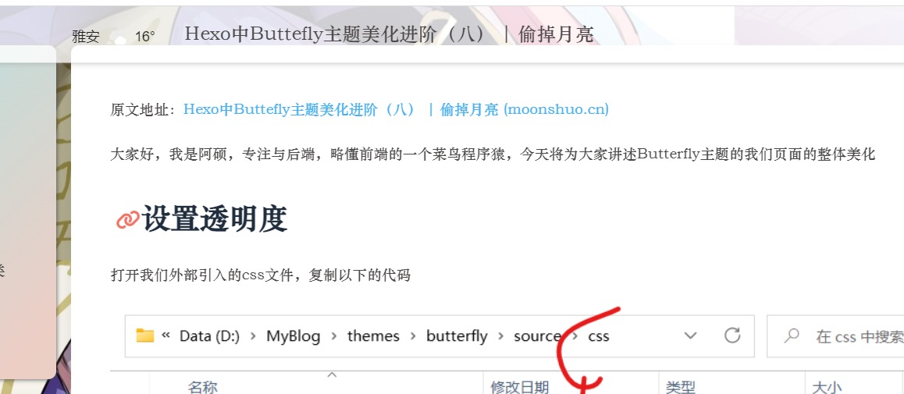
首先打开..\themes\butterfly\layout\includes\header\nav.pug文件，在以下位置添加代码，注意格式，否则会报错，最后的两行是添加的代码
1 2 3 4
#menus !=partial('includes/header /menu_item', {}, {cache: true}) center(id="name-container") a (id="page-name" href="javascript:scrollToTop ()") PAGE_NAME
新建nav.js文件，复制以下代码
1 2 3 4 5 6 7 8 9 10 11 12 13 14 15 16 17 18 19 20 21 22 23 24 25 26 27 28 29 30 31
document .getElementById ("name-container" ).setAttribute ("style" , "display:none" );var position = $(window ).scrollTop ();$(window ).scroll (function ( var scroll = $(window ).scrollTop (); if (scroll > position) { document .getElementById ("name-container" ).setAttribute ("style" , "" ); document .getElementsByClassName ("menus_items" )[1 ].setAttribute ("style" , "display:none!important" ); } else { document .getElementsByClassName ("menus_items" )[1 ].setAttribute ("style" , "" ); document .getElementById ("name-container" ).setAttribute ("style" , "display:none" ); } position = scroll; }); function scrollToTop ( document .getElementsByClassName ("menus_items" )[1 ].setAttribute ("style" ,"" ); document .getElementById ("name-container" ).setAttribute ("style" ,"display:none" ); btf.scrollToDest (0 , 500 ); } document .getElementById ("page-name" ).innerText = document .title .split (" |" )[0 ];
复制以下css代码进行到自定义css文件中
1 2 3 4 5 6 7 8 9 10 11 12 13 14 15 16 17 18 19 20 21 22 23 24 25 26 27 28 29 30 31 32 33 34 35 36 37 38 39 40 41 42 43 44 45 46 47 48 49 50 51 52 53 54
#page-name ::before { font-size : 18px ; position : absolute; width : 100% ; height : 100% ; border-radius : 8px ; color : white !important ; top : 0 ; left : 0 ; background-color : var (--lyx-theme); transition : all .3s ; -webkit-transition : all .3s ; -moz-transition : all .3s ; -ms-transition : all .3s ; -o-transition : all .3s ; opacity : 0 ; box-shadow : 0 0 3px var (--lyx-theme); line-height : 45px ; } #page-name :hover :before { opacity : 1 ; } @media screen and (max-width :900px ) { #page-name , #menus { display : none !important ; } } #name-container { transition : all .3s ; -webkit-transition : all .3s ; -moz-transition : all .3s ; -ms-transition : all .3s ; -o-transition : all .3s ; } #name-container :hover { scale: 1.03 } #page-name { position : relative; padding : 10px 30px } #nav { padding : 0 20px ; }
最终注意不要忘了引入以上的js文件和css文件，hexo 三部即可成功
顶部加载条
在自定义css文件中复制以下的代码
1 2 3 4 5 6 7 8 9 10 11 12 13 14 15 16 17 18 19 20 21 22 23 24 25 26 27 28 29 30 31 32 33 34 35 36 37 38 39 40 41 42 43 44 45 46 47 48 49 50 51 52 53 54 55 56 57
.pace { pointer-events : none; user-select: none; z-index : 2 ; position : fixed; margin : auto; top : 4px ; left : 0 ; right : 0 ; height : 8px ; border-radius : 8px ; width : 6rem ; background : #eaecf2 ; overflow : hidden; } .pace-inactive .pace-progress { opacity : 0 ; transition : 0.3s ease-in; } .pace .pace-inactive { opacity : 0 ; transition : 0.3s ; top : -8px ; } .pace .pace-progress { box-sizing : border-box; transform : translate3d (0 , 0 , 0 ); position : fixed; z-index : 2 ; display : block; position : absolute; top : 0 ; right : 100% ; height : 100% ; width : 100% ; background : #49b1f5 ; background : linear-gradient ( to right, rgb (18 , 194 , 233 ), rgb (196 , 113 , 237 ), rgb (246 , 79 , 89 ) ); animation : gradient 2s ease infinite; background-size : 200% ; } #nav-right { flex : 1 1 auto; justify-content : flex-end; margin-left : auto; display : flex; flex-wrap : nowrap; }
然后在butterfly主题中引入以下的js文件
1
- <script src ="http://cdn.bootcss.com/pace/1.0.2/pace.min.js" async > </script >
小更改
下面是一些小更改，但是作者就不单单写一篇了，这里一起讲出来
更改分割线图标
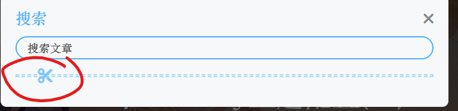
我们可以对图中的小剪刀样式进行更改，但是无法使用阿里巴巴的图标，比较遗憾
Find
Icons with the Perfect Look & Feel | Font
Awesome ，打开下面网站，找到对应的图标复制对应的编号，比较可惜的是这个图标的颜色受到主题配置文件中theme标签的限制，与文章整体一起变化
1 2 3 4 5
# The setting of divider icon (水平分隔線圖標設置) hr_icon: enable: true icon: '\f197' # the unicode value of Font Awesome icon, such as '\3423' icon-top:
更改侧边框位置
看下面的注解进行更改，大家自行选择开启，博主关闭了大部分，这样给其他的小组件留位置
1 2 3 4 5 6 7 8 9 10 11 12 13 14 15 16 17 18 19 20 21 22 23 24 25 26 27 28 29 30 31 32 33 34 35 36 37 38 39 40 41 42 43 44 45 46 47 48 49 50 51 52 53 54 55 56 57 58
# aside (側邊欄) # -------------------------------------- aside : enable: true hide: false button: true mobile: true # display on mobile #侧边栏右边还是左边显示 position: right # left or right display: #这个目前还不清除是干嘛的 archive: true tag: true category: false #作者卡片是否开启 card_author: enable: true description: #链接按钮是否显示 button: enable: false icon: fab fa-github text: Follow Me link: https://github.com/xxxxxx #公告卡片 card_announcement: enable: true content: 欢迎来到阿硕的博客，如果你有什么疑问请留言 #侧边栏展示下面信息吗还有数量限制等等 card_recent_post: enable: true limit: 5 # if set 0 will show all sort: date # date or updated sort_order: # Don't modify the setting unless you know how it works card_categories: enable: false limit: 8 # if set 0 will show all expand: none # none/true/false sort_order: # Don' t modify the setting unless you know how it works card_tags: enable: false limit: 40 # if set 0 will show all color: false sort_order: # Don't modify the setting unless you know how it works card_archives: enable: false type: monthly # yearly or monthly format: MMMM YYYY # eg: YYYY年MM月 order: -1 # Sort of order. 1, asc for ascending; -1, desc for descending limit: 8 # if set 0 will show all sort_order: # Don' t modify the setting unless you know how it works card_webinfo: enable: true post_count: true last_push_date: true sort_order: # Don't modify the setting unless you know how it works
网站运行时间
虽然这里与我们上面的页脚设置重复了，但是大家可以选择开启
1 2 3 4 5
# Time difference between publish date and now (網頁運行時間) # Formal: Month/Day/Year Time or Year/Month/Day Time runtimeshow: enable: true publish_date: 3 /5 /2022 00 :00 :00
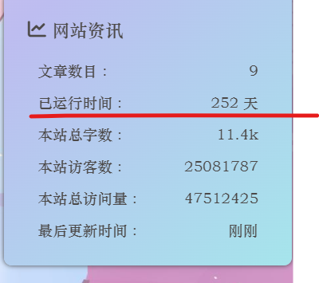
背景效果
改为true即可，如果设置了背景建议不要进行设置
1 2 3 4 5 6 7 8 9 10 11 12 13 14 15 16 17 18 19 20 21 22 23 24 25
# canvas_ribbon (靜止彩帶背景) # See: https://github.com/hustcc/ribbon.js canvas_ribbon: enable: false size: 150 alpha: 0.6 zIndex: -1 click_to_change: false mobile: false # Fluttering Ribbon (動態彩帶) canvas_fluttering_ribbon: enable: false mobile: false # canvas_nest # https://github.com/hustcc/canvas-nest.js canvas_nest: enable: false color: '0,0,255' #color of lines, default: '0,0,0' ; RGB values: (R,G,B).(note: use ',' to separate.) opacity: 0.7 # the opacity of line (0 ~1 ), default: 0.5 . zIndex: -1 # z-index property of the background, default: -1 . count: 99 # the number of lines, default: 99 . mobile: false
加载效果
页面没有加载完毕的的时候，加载的效果
1 2 3 4 5 6 7 8 9
# Loading Animation (加載動畫) preloader: enable: false # source # 1 . fullpage-loading # 2 . pace (progress bar) source: 1 # pace theme (see https://codebyzach.github.io/pace/) pace_css_url: